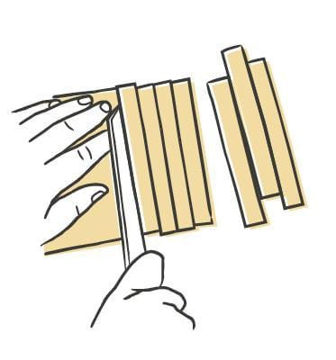
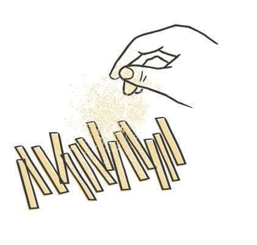

Pasta / Shapes
Pizzoccheri
- Region
- The Valtellina, in Lombardy
- Rest
- 20-30 min at room temperature
- Source
- Pasta, Missy Robbins
- Formed
- ribbon
Shaping



Method
- Make the buckwheat dough, then roll and sheet it.
- Give a wooden work surface a light dusting of 00 flour. Line a sheet pan with parchment, then dust the parchment with semolina.
- Knife the sheets into 18 by 4 1/2-inch rectangles and trim the ragged edges off. Save the trim for soup. Keep the sheets under plastic or a towel.
- Lay one sheet down with the long side nearest you. Cut 1/2-inch strands, working inward from one edge.
- Dust the strands generously with 00 flour, shake them apart, and spread them in a single layer on the pan.
- Repeat with the rest of the sheets.
- Dry 20 to 30 minutes at room temperature.
- To hold, cover the pan with plastic and refrigerate up to 24 hours.
Notes
- This shape needs buckwheat dough, which is not one of the four standard doughs in this collection.
- The protective consortium's ratio is one part 00 flour to four parts buckwheat. Robbins reverses it, so 00 flour dominates, and uses egg yolk in place of water. The result is less gritty and more pliable.
- Cut width is 1/2 inch. Sheets get cut to 18 by 4 1/2 inches first.
- Spread the cut strands in a single layer rather than nesting or coiling them.
- Refrigerated shelf life is 24 hours.
- The dish it belongs to is pizzoccheri alla valtellinese, built on cheese, potatoes, butter, and cabbage. It also suits other hearty, vegetable-forward pastas.